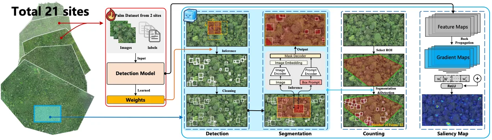
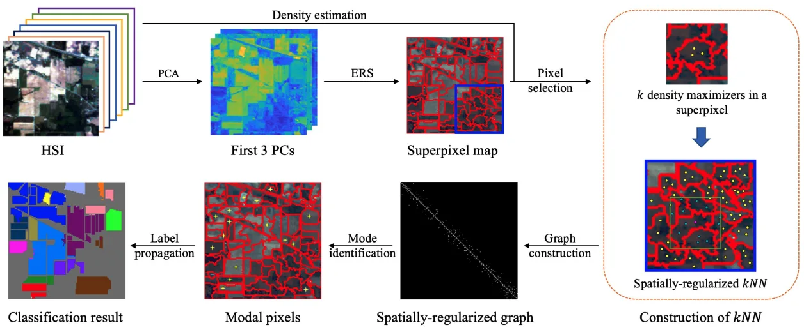

Geospatial AI
From aerial imagery
to forest maps.
We develop methods to locate individual trees, model their spatial distributions, and map landscapes with limited labels. PRISM and PalmDSNet work with UAV imagery; S2DL learns from hyperspectral images without manual annotations.
01 / IJCAI'25, Oral
PRISM
Detection, segmentation and geographic mapping
A pipeline for mapping individual palms in dense tropical forests, where overlapping crowns and uneven shading make detection difficult.

- Method. Evaluate object detectors, segment crowns with SAM 2, and convert detections into geographic locations. Calibrate confidence scores against localization quality.
- Study. UAV imagery from 21 sites in western Ecuador, annotated with 8,830 bounding boxes and 5,026 palm center points.
- Output. Geolocated palm detections and crown masks, with code, presentation slides and a poster for reuse.
Full citation and authors
Detection and Geographic Localization of Natural Objects in the Wild: A Case Study on Palms [IJCAI'25, Oral]
†,*, Rongkun Zhu†, Manqi Wang, Wei Tang, Gregory D. Larsen, Victor P. Pauca, Sarra Alqahtani, Fan Yang, David Segurado, David Lutz, Jean-Michel Morel, and Miles R. Silman
Abstract and publication details02 / TGRS'25
PalmDSNet
From individual palms to spatial distributions
Linking image analysis with ecological spatial modeling to study how canopy palms are distributed across tropical forests.

- Method. Detect, segment and count palms, then simulate their distribution with a bimodal reproduction algorithm.
- Study. UAV orthomosaics from 21 western Ecuador sites spanning wet Chocó forests to drier southwestern forests.
- Output. Palm maps, spatial simulations, an openly available annotated dataset, and code to reproduce the study.
Full citation and authors
Efficient Localization and Spatial Distribution Modeling of Canopy Palms Using UAV Imagery [TGRS'25]
†,*, Wei Tang†, Rongkun Zhu, Manqi Wang, Gregory D. Larsen, Victor P. Pauca, Sarra Alqahtani, Fan Yang, David Segurado, Paul Fine, Jordan Karubian, Raymond H. Chan, Robert J. Plemmons, Jean-Michel Morel, and Miles R. Silman
Abstract and publication details03 / TGRS'24
S2DL
Hyperspectral clustering without manual labels
A complementary direction: learning spatial and spectral structure without annotated training data.

- Method. Build a diffusion graph from representative pixels within superpixels, then propagate cluster labels to the full image.
- Study. Evaluated on Indian Pines, Salinas, Salinas A and WHU-Hi, with a Gaofen-5 application to mangrove species mapping in Hong Kong’s Mai Po Nature Reserve.
- Output. Unsupervised clustering maps with reduced graph construction cost; the implementation is publicly available.
Full citation and authors
Superpixel-based and Spatially-regularized Diffusion Learning for Unsupervised Hyperspectral Image Clustering [TGRS'24]
†,*, Ruoning Li, Sam L. Polk, Yinyi Lin, Hongsheng Zhang, James M. Murphy, Robert J. Plemmons, and Raymond H. Chan
Abstract and publication detailsOpen data for canopy palm mapping
The PalmDSNet dataset contains expert annotations for UAV imagery of western Ecuador’s tropical forests.
- 449 ha
- Area covered by the five annotated orthomosaics
- 7,356
- Bounding boxes on image patches
- 7,603
- Palm centers across five orthomosaics
These counts refer to the PalmDSNet dataset (TGRS 2025). PRISM reports a separate annotation set, described above. Please cite the corresponding paper and follow the license and instructions provided with each resource.
Research and collaboration
For collaboration on geospatial learning and environmental monitoring, contact Kangning Cui. Prospective students can explore opportunities in the group.